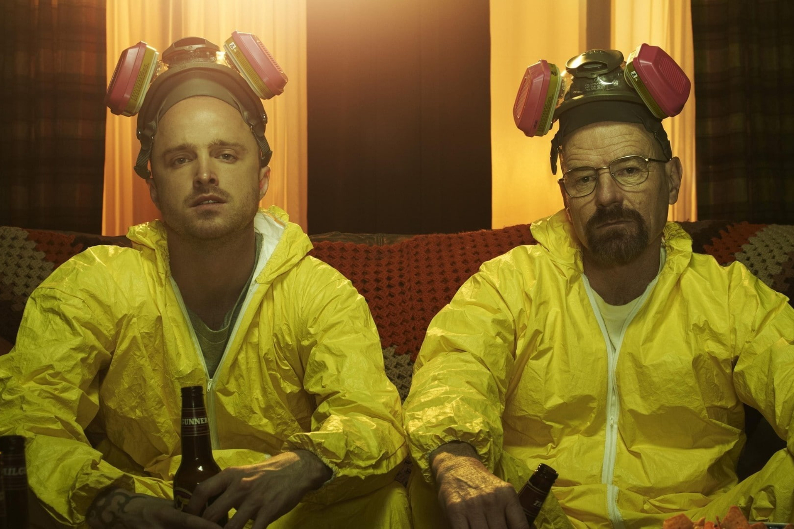
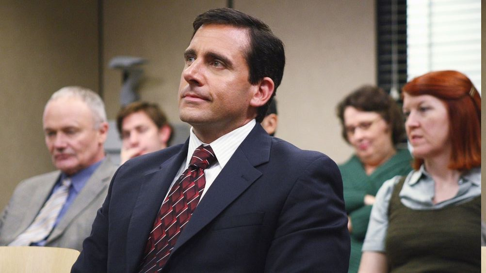

Better Call Saul é uma série televisiva que retrata a transformação
do advogado Jimmy McGill no notório advogado de Albuquerque Saul Goodman
, já conhecido da série Breaking Bad.
Criadores: Vince Gillian • Peter Gould
Data de lançamento: 8 de fevereiro de 2015
Elenco: Bob Odenkirk • Jonathan Banks • Michael Mando •
Patrick Fabian • Rhea Seehorn • Dean Norris
AVALIAÇÃO IMDb
8.9/10
ONDE ASSISTIR?
PORQUE GOSTO DESTA SÉRIE?
O principal motivo de eu gostar tanto desta série é o facto de se passar
no mesmo universo de Breaking Bad e haver uma exploração da origem dos personagens,
ou seja, Better Call Saul explora as origens de vários personagens de Breaking Bad,
como o advogado corrupto Saul Goodman, o traficante de drogas Gus Fring e o agente
da DEA Hank Schrader. Essa exploração aprofunda a compreensão dos personagens e acrescenta
mais camadas ao enredo geral.
Better Call Saul aborda temas relevantes, como corrupção, justiça e moralidade, e oferece
insights interessantes sobre esses temas. A série é capaz de fazer perguntas difíceis sobre
a natureza humana e a sociedade em que vivemos, o que a torna ainda mais impactante e
significativa.
EPISÓDIO FAVORITO
De uma extensa gama de episódios simplesmente geniais, destaco o "Saul Gone". Trata-se de um
episódio que explora profundamente a jornada emocional do personagem Jimmy McGill/Saul Goodman.
O episódio começa com uma cena forte em que Jimmy desaba em lágrimas, revelando a dor e o
trauma que carrega consigo. Essa exploração emocional ajuda a desenvolver o personagem e
torná-lo mais complexo e humano. Este episódio é capaz de transmitir uma sensação de desespero
e tristeza sem parecer melodramático ou exagerado, e mostra que as ações do passado podem ter
consequências duradouras e que as pessoas podem ser perseguidas pelos seus erros e traumas.
PERSONAGEM FAVORITO
Num elenco de extrema qualidade com várias pessoas a desempenhar papéis extraordinários,
vejo-me uma vez mais a distinguir o personagem principal como o meu favorito. Isto
deve-se ao facto da série explorar as origens de Saul Goodman e como ele se tornou
o advogado corrupto que conhecemos em Breaking Bad. Esta exploração acrescenta mais camadas
ao personagem e ajuda a compreender melhor as suas motivações e escolhas.
Saul Goodman é um personagem carismático e engraçado, que consegue conquistar o espectador
com a sua personalidade excêntrica e divertida. Ele é capaz de trazer um certo alívio cómico
para a série, mesmo em momentos tensos. É um personagem complexo, que se envolve em atividades
criminosas, mas também é capaz de demonstrar empatia e preocupação pelos outros.
VER A SEGUIR

Breaking Bad
A transformação de um professor de química de meia-idade num
poderoso traficante de droga enquanto enfrenta as consequências
das suas escolhas num mundo perigoso e implacável.

The Office
O cotidiano de um grupo de funcionários de uma empresa de papel na
Pensilvânia, apresentando situações cômicas e personagens
excêntricos.